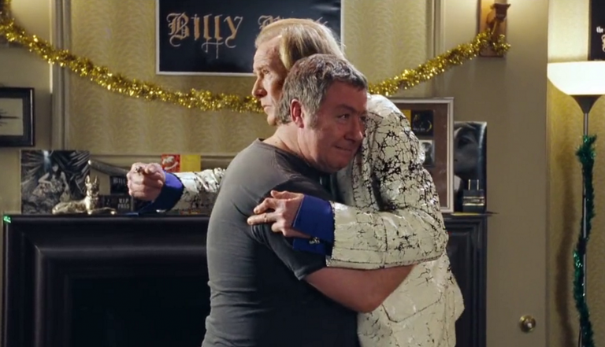
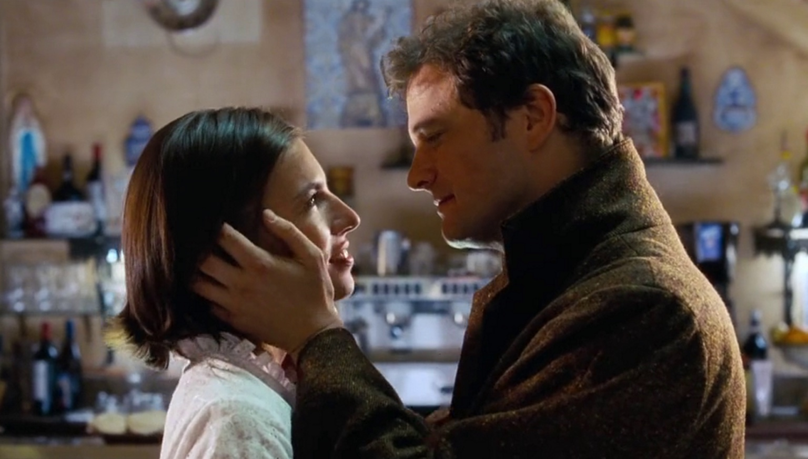
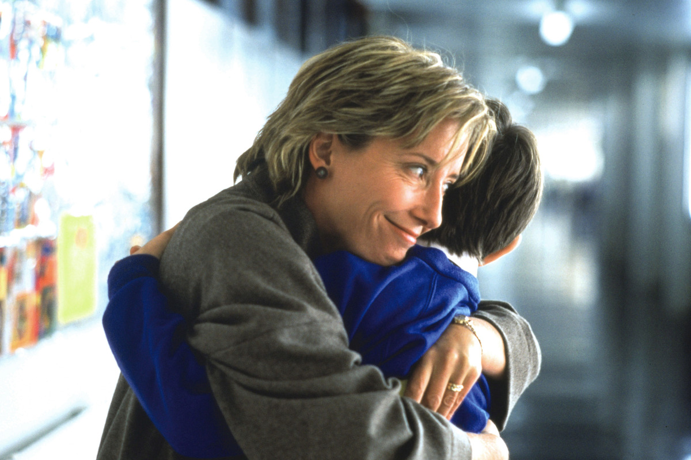
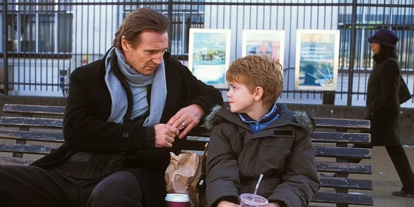
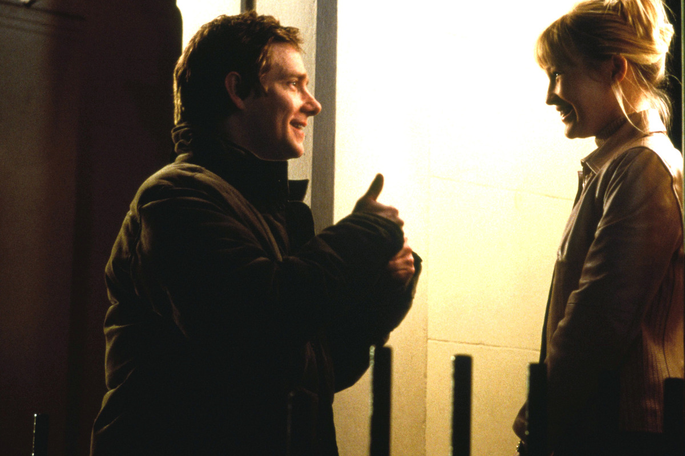
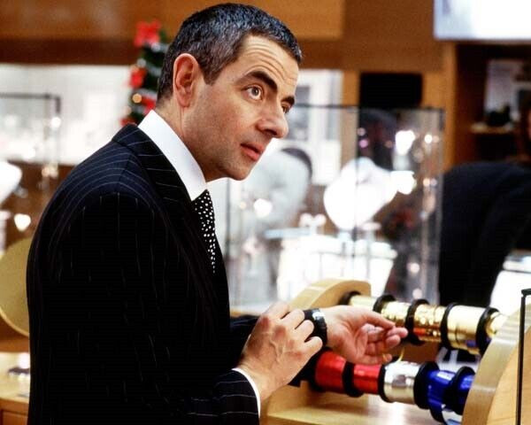

A voice-over opens the film, commenting that whenever the narrator gets gloomy about the state of the world, he thinks of the arrivals gate at Heathrow Airport, and the pure and uncomplicated love of lovers, friends and families welcoming their loved ones. He also points out that the messages from the 9/11 victims were messages of love and not hate. The story then switches among the interconnecting "love stories" of many people:
-
Billy Mack and Joe
With his long-time manager Joe (Gregor Fisher), rock and roll legend Billy Mack (Bill Nighy) records a Christmas version of the Troggs' 1967 song "Love Is All Around", titling it "Christmas Is All Around". Although believing the record is terrible, Mack promotes the release in the hope it will become the Christmas number one single, which it does. He foregoes a victory party hosted by Elton John to celebrate Christmas with Joe, getting drunk and watching porn.

-
Juliet, Peter, and Mark
Juliet and Peter's wedding (Keira Knightley and Chiwetel Ejiofor) is videotaped by the best man, Mark (Andrew Lincoln), where a surprise band plays the Beatles' "All You Need Is Love" as they walk out of the church. Although the couple believes Mark dislikes Juliet, he is actually in love with her.
When he evades her requests to see the video he shot at the wedding, she shows up at his flat. Juliet insists she wants them to be friends, but when she views the wedding video Mark recorded, she sees many extreme close-ups of herself and a few of Peter's face. She realises Mark's true feelings towards her. After an uncomfortable silence, Mark blurts out that he acts coldly toward her out of "self-preservation".
On Christmas Eve, Juliet answers the doorbell to find Mark carrying a boombox playing a Christmas carol and large cue cards. While Peter is inside watching television, Mark shows a message of his love to Juliet through a series of cue cards. As he walks away down the street, Juliet runs after him, gives him a quick kiss, and returns inside. Mark walks away, uttering "Enough", to imply he can be content as friends.
-
Jamie and Aurélia
Writer Jamie (Colin Firth) is pushed by his girlfriend to attend Juliet and Peter's wedding alone as she is ill. He returns before the reception to check on her, discovering she is having sex with his brother. Crushed, Jamie withdraws to his French cottage, where he meets Portuguese housekeeper Aurélia (Lúcia Moniz), who does not speak English. Despite not sharing a common language, a mutual attraction grows.
Jamie returns to the United Kingdom, realises he is in love with Aurélia and begins learning Portuguese. He returns to France to find her and ends up walking through town with her father and sister, gathering additional people as they walk to her waitressing job. In basic, and often grammatically incorrect, Portuguese, he declares his love for her and proposes. She says yes in broken English, showing she too had been studying English "just in cases", as the crowd erupts in applause.

-
Harry, Karen, and Mia
Harry (Alan Rickman) is the managing director of a design agency. Mia (Heike Makatsch) is his secretary. Harry is happily married to Karen (Emma Thompson), a stay-at-home mother. They have two children, Bernard and Daisy (Lulu Popplewell). Mia behaves in an overtly sexual way with him at the office and asks him for a Christmas present. At the company Christmas party held at Mark's gallery, they dance closely.
While Christmas shopping, Harry calls Mia and asks what she wants for Christmas. He is almost caught by his wife purchasing an expensive necklace with a gold heart pendant from the jewelry department when the salesman, Rufus (Rowan Atkinson), takes an inordinate amount of time to wrap it. Later, Karen finds the necklace in Harry's coat pocket and assumes it is for her. Opening a similarly shaped box on Christmas Eve, she is heartbroken to find it is a Joni Mitchell CD, realises he bought the necklace for someone else, and cries in their bedroom alone. She keeps a happy face so as not to ruin her family's holiday. She confronts Harry and asks what he would do if he were her. She feels he has made a mockery of their marriage and of her. Harry comes clean and admits that he has been foolish.

-
David and Natalie
David (Hugh Grant), Karen's brother and the recently elected Prime Minister, is single. Natalie (Martine McCutcheon) is a new junior member of the household staff at 10 Downing Street. During a meeting with the US president (Billy Bob Thornton), they pass Natalie, and the president makes inappropriate comments to David about her. Later, David walks in on Natalie who is serving tea and biscuits to the president, and finds him kissing her. Natalie seems embarrassed, and the president has a sly grin on his face. At the following joint press conference, David is uncharacteristically assertive while taking a stand against the president's intimidation techniques.
Feeling uncomfortable around Natalie, David has her moved to another position. He is spurred to action on Christmas Eve when he finds a Christmas card from her in his red box, declaring that she is his and only his. He finds her after a door-to-door search of her street. Her entire family is on their way to a multi-school Christmas play, and he offers to drive them so he can talk to her. As Natalie sneaks him into the school, he runs into his heartbroken sister, Karen, who believes he is there for his niece and nephew. As David and Natalie try to keep from being seen and watch from backstage, they finally kiss. Everyone sees them kissing as the curtain rises.
-
Daniel, Sam, Joanna, and Carol
Daniel (Liam Neeson), Karen's close friend, mourns the recent death of his wife, Joanna, as he tries to care for his stepson Sam (Thomas Sangster). Sam has fallen for an American classmate, also named Joanna (Olivia Olson), and after talking with his stepfather, decides to learn the drums to accompany her in the big finale for their school's Christmas pageant at Karen and Harry's children's school. Sam feels he has missed his chance to impress her, but Daniel convinces him to try to tell Joanna how he feels at the airport before she returns to the US. Sam slips through airport security and catches up with her. She acknowledges him by name, which surprises him. Sam returns to Daniel to tell him, and Joanna follows him, surprising him again, and kisses him on the cheek. A subplot in this storyline involves Daniel stating a few times his wish to date Claudia Schiffer. Eventually, Daniel meets Carol (portrayed by Schiffer) who is the mother of Sam's schoolmate, and there is a mutual spark.

-
Sarah, Karl, and Michael
Sarah (Laura Linney) first appears at Juliet and Peter's wedding, sitting next to her friend Jamie. An American working at Harry's graphic design company, she is in love with the creative director, Karl (Rodrigo Santoro). Prompted by Harry, they finally connect at the Christmas party, and Karl drives her home. Sarah invites Karl in and they immediately pull off their clothes and begin to get intimate when Michael (Michael Fitzgerald), her mentally ill brother, telephones from a psychiatric hospital, aborting their tryst. On Christmas Eve, they are both working late. Karl tries to find words but just wishes her a merry Christmas and leaves. In tears, Sarah calls Michael and visits him to give him a Christmas gift
-
Colin, Tony, and the American Girls
After unsuccessfully attempting to woo various British women, including Mia and Nancy (Juliet and Peter's wedding caterer; Julia Davis), Colin Frissell from Basildon (Kris Marshall) informs his friend Tony (Abdul Salis) that he plans to go to the US, convinced that his Britishness will be an asset. Landing in Milwaukee, Colin hails a taxi and asks the driver to take him to the nearest bar. There, he immediately meets Stacey (Ivana Miličević), Jeannie (January Jones), and Carol-Anne (Elisha Cuthbert), three stunningly attractive women who instantly fall for his Estuary English accent, inviting him to stay at their home, where they are joined by their "sexiest" roommate Harriet (Shannon Elizabeth).
-
John and Judy
John (Martin Freeman) and Judy (Joanna Page) are professional stand-ins for films. They meet doing the sex scenes for a film for which Tony is a production assistant. John tells Judy, "It's lovely to find someone I can actually chat to." While they are perfectly comfortable being naked and simulating sex on-set, they are shy and tentative off-set. They carefully pursue a relationship, attending the Christmas pageant (involving David and Natalie, Harry and Karen's children, Daniel and Sam) at the local school with John's brother. They get engaged by the end of the film.

-
Rufus
Rufus (Rowan Atkinson) is the jewellery salesman whose meticulous gift-wrapping nearly results in Karen seeing Harry buying a necklace for Mia. In another scene, his distraction of airport staff enables Sam to sneak past them to talk to Joanna. In the director and cast commentary, it is revealed that Rufus was originally supposed to be a Christmas angel, but this was dropped from the final script.

-
Epilogue
A month later, all the characters are seen at Heathrow Airport. Billy's Christmas single has spurred a comeback. Juliet, Peter, and Mark meet Jamie and his bride, Aurélia. Karen and the kids greet Harry, but Karen's stilted reaction suggests they are struggling to move past his affair. Sam greets Joanna, who has returned from America, and Daniel is joined by his new girlfriend, Carol, and her son. Newlyweds John and Judy, heading off to their honeymoon, run into Tony who is awaiting Colin's return from America. Colin returns with Harriet and her sister Carla, who meets Tony for the first time but greets him with a hug and a kiss on the lips. Natalie welcomes David back from his flight in view of the press, showing their relationship is now public. These scenes dissolve into footage of actual arrivals at Heathrow, as the screen is divided into an increasing number of smaller segments to form a photographic mosaic of a heart.
-
Story association
All the stories are linked in some way; while Mack and his manager do not connect with the other characters physically, Billy appears frequently on characters' radios and TVs, his music video twice providing an important plot device for Sam's pursuit of Joanna, and they also cross paths with the other characters in the closing Heathrow scene. John and Judy work with Tony, who is best friends with Colin, who works for a catering company that services the office where Sarah, Karl, Mia, and Harry work. Mia is friends with Mark, who runs the art gallery where the Christmas office party takes place. Mia also lives next door to Natalie. Mark is in love with Juliet and friends with Peter. The couple is friends with Jamie and Sarah. Harry is married to Karen, who is friends with Daniel, and her brother is David, who works with Natalie. Harry and Karen's children (and thus David's niece and nephew), Natalie's siblings (and thus Mia's neighbours), and Carol's son are all schoolmates of Sam and Joanna. Daniel proclaims that his late wife was the only one for him unless he met Claudia Schiffer. Carol is played by Schiffer.